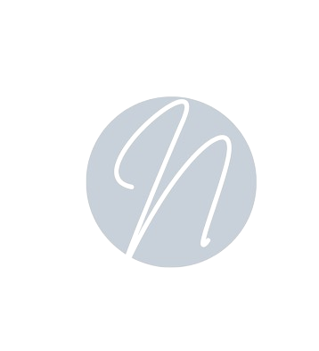

chit chat
Chat is currently unavailable.
We are working on it.
About Noble
Noble is a simple chat application.
It allows users to communicate in real-time.
It is built using modern web technologies and follows best practices for web development.
Created by dyieus
